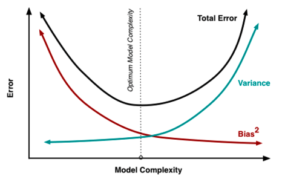
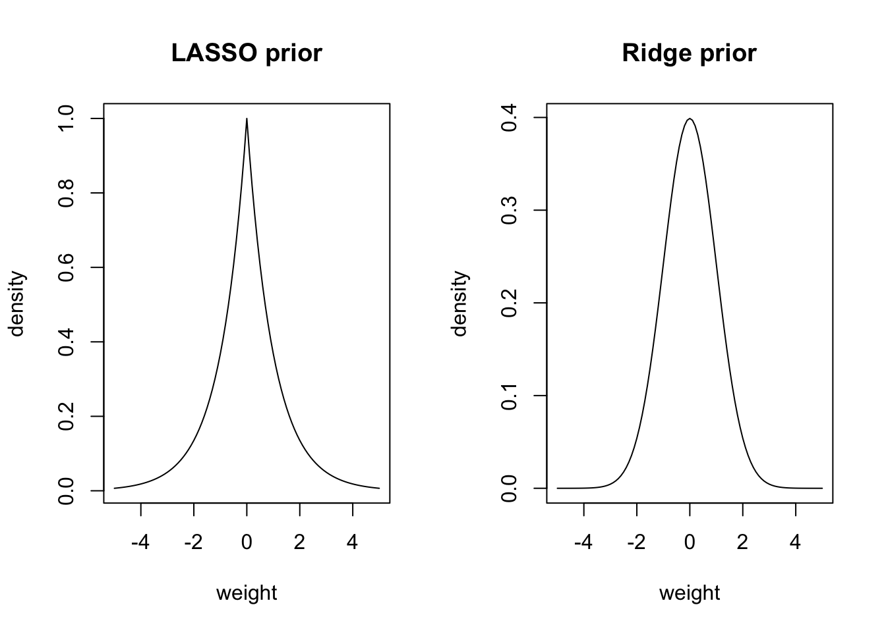
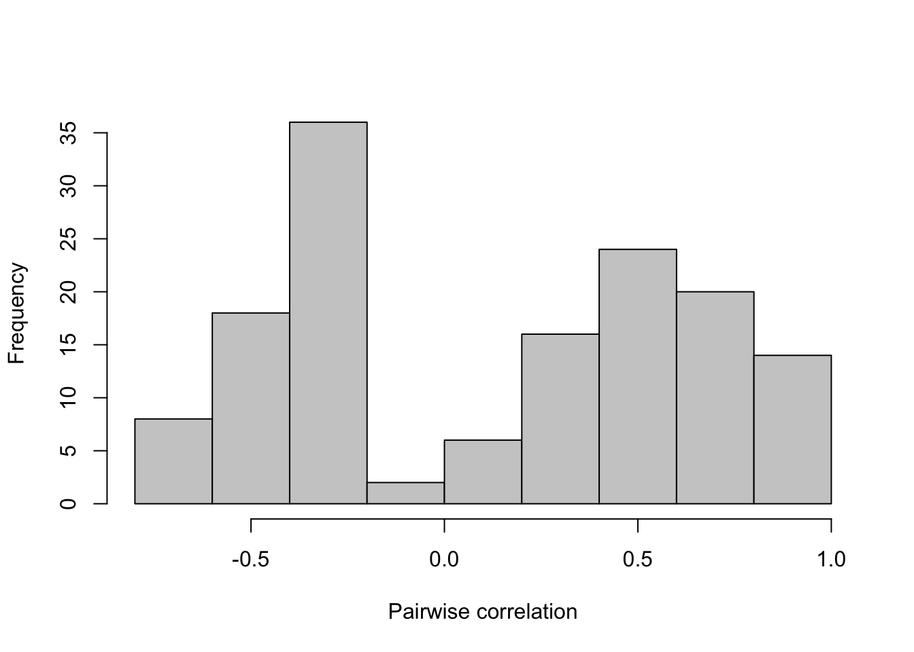
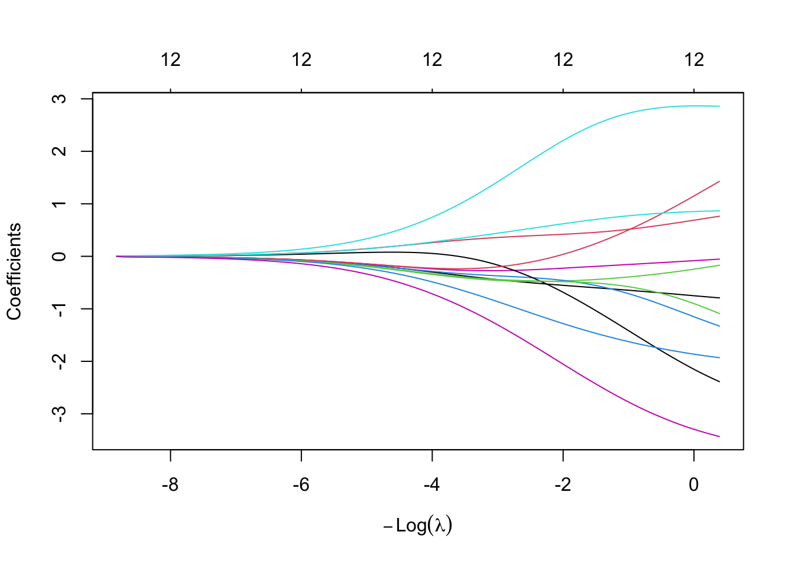
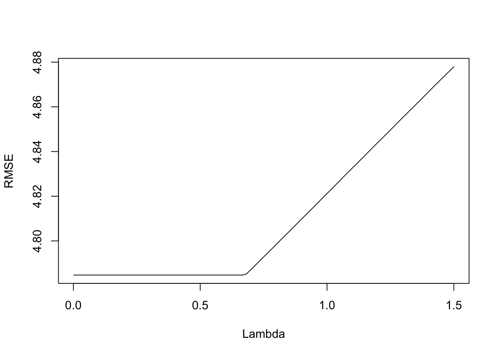
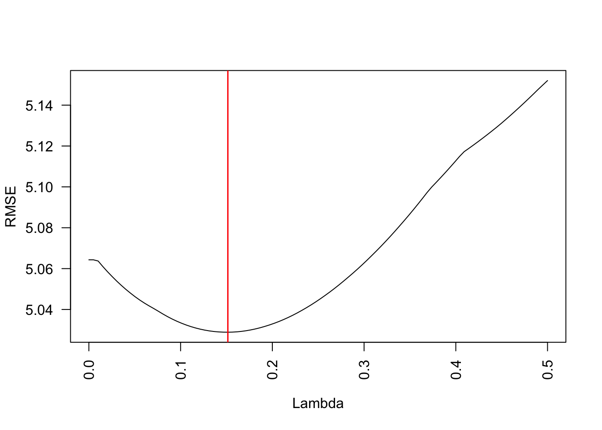
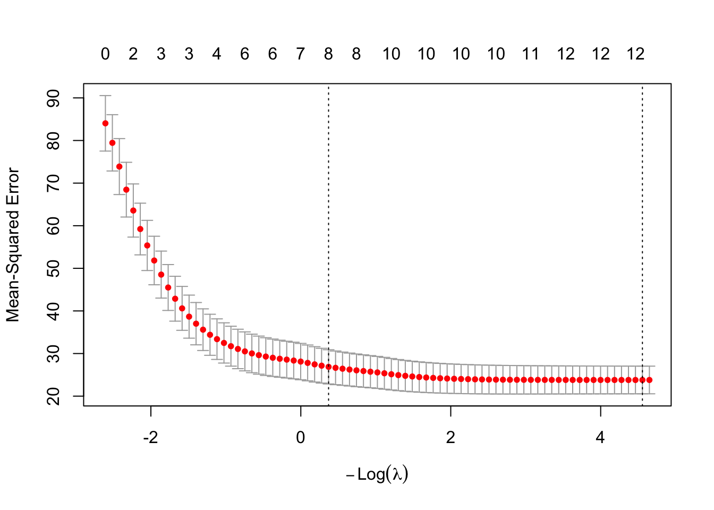
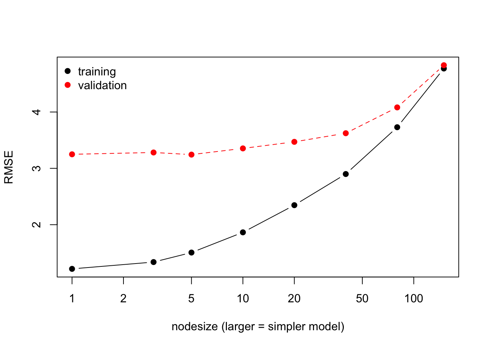

library(mlbench)
data(BostonHousing)
data = BostonHousing
set.seed(123)3 Managing algorithmic complexity
3.1 Estimating error on the validation data
You probably remember from statistics that a more complex model always fits the training data better. The decisive question, however, is whether it also works better on new (independent) data. Technically, we call this the out-of-sample error, as opposed to the in-sample error, which is the error on the training data.
Error can be measured in different ways, but usually we calculate some kind of accuracy (especially for classification tasks) or how much variance is explained by our model (regression tasks). We also distinguish between the error used to train the model and the error used to validate it. The error the ML algorithm uses internally to train the model is what we call the loss: the smaller the loss, the better the model fits.
Losses can be used to validate a model, but they are often hard to interpret (they frequently live in the range \([0, \infty[\)) and are not comparable across datasets because they are data-specific. Therefore, in practice, we use interpretable validation metrics that can be compared across datasets (e.g. model A achieves 80% accuracy on dataset A and 70% on dataset B). Here is an overview of some common validation metrics and their interpretation:
Validation metrics for classification tasks:
| Validation Metric | Range | Classification Types | Explanation |
|---|---|---|---|
| Area Under the Curve (AUC) | \([0, 1]\) | Binary Classification Tasks (e.g. Titanic Dataset, survived or died) | The ability of our models to distinguish between 0 and 1. Requires probability predictions. An AUC of 0.5 means that the algorithm is making random predictions. Lower than 0.5 –> worse than random |
| Accuracy | \([0, 1]\) | All types of classifications (including multiclass tasks) | The accuracy of our models, how many of the predicted classes are correct. The baseline accuracy depends on the distributions of the classes (if one class occurs 99% in the data, a random model that will only predict this class, will achieve already a very high accuracy |
Validation metrics for regression tasks:
| Validation Metric | Range | Explanation |
|---|---|---|
| \(R^2\) | \([0, 1]\) | How much variance is explained by our model. We usually use the sum of squares \(R^2\) |
| Correlation factors (Pearson or Spearman) | \([-1, 1]\) | Measures correlation between predictions and observations. Spearman (rank correlation factor) can be useful for skewed distributed responses (or non-normal distributed responses, such as count data). |
| Root mean squared error (RMSE) | \([0, \infty[\) | RMSE is not a really interpretable but it is still used as a common validation metrics (is also used as a loss to train models). The RMSE reports how much variance is unexplained (so smaller RMSE is better). However, RMSE is not really comparable between different data sets. |
3.1.1 Splitting off validation data
To check the out-of-sample error, we usually split out some part of the data for later model validation. Let’s look at this at the example of a supervised regression, trying to predict house prices in Boston.
Creating a split by deciding randomly for each data point if it is used for training or validation
n = nrow(BostonHousing)
train = sample.int(n, size = round(0.7*n))Fitting two lms, one with a few predictors, one with a lot of predictors (all interaction up to 3-way)
m1 = lm(medv~., data = data[train,])
m2 = lm(medv~.^3, data = data[train,])Testing predictive ability on training data (in-sample error)
cor(predict(m1), data[train,]$medv)[1] 0.8561528cor(predict(m2), data[train,]$medv)[1] 0.9971297The more complex model m2 is clearly better on the training data. As a next step, we test the predictive ability on the hold-out data (the validation set, i.e. the out-of-sample error):
cor(predict(m1, newdata = data[-train,] ),
data[-train,]$medv)[1] 0.8637908cor(predict(m2, newdata = data[-train,] ),
data[-train,]$medv)Warning in predict.lm(m2, newdata = data[-train, ]): prediction from
rank-deficient fit; attr(*, "non-estim") has doubtful cases[1] -0.04036532Now, m2 is much worse!
3.1.2 Overfitting vs. underfitting
When the predictive performance drops sharply going from the training to the validation data, this signals overfitting — the model is too complex and has fit noise in the training data.
What about m1 — is it just complex enough, or too simple? Underfitting cannot be diagnosed as directly; you have to test whether making the model more complex improves results on the validation data. Let’s try a random forest:
library(randomForest)
m3 = randomForest(medv~., data = data[train,])
cor(predict(m3), data[train,]$medv)[1] 0.934475cor(predict(m3, newdata = data[-train,] ),
data[-train,]$medv)[1] 0.9364019No drop on validation data (i.e. no overfitting), but error on training and validation is much better than for m1 - so this seems to be a better model, and m1 was probably underfitting, i.e. it was not complex enough to get good performance!
3.1.3 Validation vs. cross-validation
A problem with a single validation split is that we test only on one fraction of the data (say 20% in an 80/20 split), so the estimate is noisy.
If it is computationally feasible, a better way to estimate the error is cross-validation: we repeat the train/validation split again and again until every observation has been used for validation exactly once, and then average the validation error.
Here is an example of a k-fold cross-validation, which is akin to repeating an 80/20 split five times.
In k-fold cross-validation the data is split into \(k\) equal parts (“folds”). Each fold serves once as the validation set while the model trains on the other \(k-1\) folds; the \(k\) error estimates are then averaged. Larger \(k\) uses more data for training but costs more computation.
k = 5 # folds
split = sample.int(k, n, replace = T)
pred = rep(NA, n)
for(i in 1:k){
m1 = randomForest(medv~., data = data[split != i,])
pred[split == i] = predict(m1, newdata = data[split == i,])
}
cor(pred, data$medv)[1] 0.93929323.2 Optimizing the bias-variance trade-off
3.2.1 The bias-variance trade-off
What we have just seen is an example of the bias-variance trade-off. The idea is to look at the error of the model on new test data, which comes from two contributions:
Bias = systematic error that arises because the model is not flexible enough — related to underfitting.
Variance = statistical error that arises because the estimates of the model parameters become more uncertain as we add complexity.
Optimizing the bias-variance trade-off means adjusting the complexity of the model which can be achieved by:
Feature selection (more features increases the flexibility of the model)
Regularization

Which of the following statements about the bias-variance trade-off is correct? (see figure above)
3.2.2 Feature selection
Adding features increases the flexibility of the model and the goodness of fit:
library(mlbench)
library(dplyr)
Attaching package: 'dplyr'The following object is masked from 'package:randomForest':
combineThe following objects are masked from 'package:stats':
filter, lagThe following objects are masked from 'package:base':
intersect, setdiff, setequal, uniondata(BostonHousing)
data = BostonHousing
summary(lm(medv~rm, data = data))
Call:
lm(formula = medv ~ rm, data = data)
Residuals:
Min 1Q Median 3Q Max
-23.346 -2.547 0.090 2.986 39.433
Coefficients:
Estimate Std. Error t value Pr(>|t|)
(Intercept) -34.671 2.650 -13.08 <2e-16 ***
rm 9.102 0.419 21.72 <2e-16 ***
---
Signif. codes: 0 '***' 0.001 '**' 0.01 '*' 0.05 '.' 0.1 ' ' 1
Residual standard error: 6.616 on 504 degrees of freedom
Multiple R-squared: 0.4835, Adjusted R-squared: 0.4825
F-statistic: 471.8 on 1 and 504 DF, p-value: < 2.2e-16summary(lm(medv~rm+dis, data = data))$r.squared[1] 0.4955246summary(lm(medv~., data = data))$r.squared[1] 0.7406427# Main effects + all potential interactions:
summary(lm(medv~.^2, data = data))$r.squared[1] 0.9211876The model with all features and their potential interactions has the highest \(R^2\), but it also has the highest uncertainty because there are on average only 5 observations for each parameter (92 parameters and 506 observations). So how do we decide which level of complexity is appropriate for our task? For the data we use to train the model, \(R^2\) will always get better with higher model complexity, so it is a poor decision criterion. We will show this in the sec-cv section. In short, the idea is that we need to split the data so that we have an evaluation (test) dataset that wasn’t used to train the model, which we can then use in turn to see if our model generalizes well to new data.
3.2.3 Regularization
Regularization means adding information or structure to a system in order to solve an ill-posed optimization problem or to prevent overfitting. There are many ways of regularizing a machine learning model. The most important distinction is between shrinkage estimators and estimators based on model averaging.
Shrinkage estimators are based on the idea of adding a penalty to the loss function that penalizes deviations of the model parameters from a particular value (typically 0). In this way, estimates are “shrunk” to the specified default value. In practice, the most important penalties are the least absolute shrinkage and selection operator; also Lasso or LASSO, where the penalty is proportional to the sum of absolute deviations (\(L1\) penalty), and the Tikhonov regularization aka Ridge regression, where the penalty is proportional to the sum of squared distances from the reference (\(L2\) penalty). Thus, the loss function that we optimize is given by
\[loss = fit - \lambda \cdot d\]
where fit refers to the standard loss function, \(\lambda\) is the strength of the regularization, and \(d\) is the chosen metric, e.g. \(L1\) or\(L2\):
\[loss_{L1} = fit - \lambda \cdot \Vert weights \Vert_1\]
\[loss_{L2} = fit - \lambda \cdot \Vert weights \Vert_2\]
\(\lambda\) and possibly d are typically optimized under cross-validation. \(L1\) and \(L2\) can be also combined what is then called elastic net (see Zou and Hastie (2005)).
Model averaging refers to an entire set of techniques, including boosting, bagging, and other averaging methods. The general principle is that predictions are made by combining (averaging) several models. This rests on the insight that it is often more efficient to have many simpler models and average them than to build one “super model”. The reasons are subtle, and explained in more detail in Dormann et al. (2018).
A particularly important application of averaging is boosting, where many weak learners are combined into a model average, resulting in a strong learner. A related method is bootstrap aggregating, also called bagging: the idea is to bootstrap the data (sample it with replacement) and average the predictions over the bootstrapped models.
To see how these techniques work in practice, let’s first focus on LASSO and Ridge regularization for weights in neural networks. We can imagine that the LASSO and Ridge act similar to a rubber band on the weights that pulls them to zero if the data does not strongly push them away from zero. This leads to important weights, which are supported by the data, being estimated as different from zero, whereas unimportant model structures are reduced (shrunken) to zero.
LASSO \(\left(penalty \propto \sum_{}^{} \mathrm{abs}(weights) \right)\) and Ridge \(\left(penalty \propto \sum_{}^{} weights^{2} \right)\) have slightly different properties. They are best understood if we express those as the effective prior preference they create on the parameters:

As you can see, the LASSO creates a very strong preference towards exactly zero, but falls off less strongly towards the tails. This means that parameters tend to be estimated either to exactly zero, or, if not, they are more free than the Ridge. For this reason, LASSO is often more interpreted as a model selection method.
The Ridge, on the other hand, has a certain area around zero where it is relatively indifferent about deviations from zero, thus rarely leading to exactly zero values. However, it will create a stronger shrinkage for values that deviate significantly from zero.
3.2.3.1 Ridge - Example
We can use the glmnet package for Ridge, LASSO, and elastic-net regressions.
We want to predict the house prices of Boston (see help of the dataset):
library(mlbench)
library(dplyr)
library(glmnet)Loading required package: MatrixLoaded glmnet 5.0data(BostonHousing)
data = BostonHousing
Y = data$medv
X = data |> select(-medv, -chas) |> scale()hist(cor(X), main = "", xlab = "Pairwise correlation", col = "grey80")
m1 = glmnet(y = Y, x = X, alpha = 0)The glmnet function automatically tests different values for lambda:
cbind(coef(m1, s = 0.001), coef(m1, s = 100.5))13 x 2 sparse Matrix of class "dgCMatrix"
s=0.001 s=100.5
(Intercept) 22.53280632 22.53280632
crim -0.79174957 -0.21113427
zn 0.76313031 0.18846808
indus -0.17037817 -0.25120998
nox -1.32794787 -0.21314250
rm 2.85780876 0.46463202
age -0.05389395 -0.18279762
dis -2.38716188 0.07906631
rad 1.42772476 -0.17967948
tax -1.09026758 -0.24233282
ptratio -1.93105019 -0.31587466
b 0.86718037 0.18764060
lstat -3.43236617 -0.460558373.2.3.2 LASSO - Example
By changing \(alpha\) to 1.0 we use a LASSO instead of a Ridge regression:
m2 = glmnet(y = Y, x = X, alpha = 1.0)
cbind(coef(m2, s = 0.001), coef(m2, s = 0.5))13 x 2 sparse Matrix of class "dgCMatrix"
s=0.001 s=0.5
(Intercept) 22.53280632 22.532806324
crim -0.95543108 -0.135047323
zn 1.06718108 .
indus 0.21519500 .
nox -1.95945910 -0.000537715
rm 2.71666891 2.998520195
age 0.05184895 .
dis -3.10566908 -0.244045205
rad 2.73963771 .
tax -2.20279273 .
ptratio -2.13052857 -1.644234575
b 0.88420283 0.561686909
lstat -3.80177809 -3.6821480163.2.3.3 Elastic-net - Example
By setting \(\alpha\) to a value between 0 and 1.0, we use a combination of LASSO and Ridge:
m3 = glmnet(y = Y, x = X, alpha = 0.5)
cbind(coef(m3, s = 0.001), coef(m3, s = 0.5))13 x 2 sparse Matrix of class "dgCMatrix"
s=0.001 s=0.5
(Intercept) 22.53280632 22.5328063
crim -0.95716118 -0.3488473
zn 1.06836343 0.1995842
indus 0.21825187 .
nox -1.96211736 -0.7613698
rm 2.71859592 3.0137090
age 0.05299551 .
dis -3.10330132 -1.3011740
rad 2.73321635 .
tax -2.19638611 .
ptratio -2.13041090 -1.8051547
b 0.88458269 0.6897165
lstat -3.79836182 -3.61368533.3 Hyperparameter tuning
3.3.1 What is a hyperparameter?
Parameters such as \(\lambda\) and \(\alpha\) — which control the complexity of the model, or other aspects such as the learning or optimization — are called hyperparameters. Unlike ordinary parameters, they are not learned from the data during training but set beforehand.
Hyperparameter tuning is the process of finding the optimal set of hyperparameters for a given task. They are usually data-specific, so they have to be tuned for each dataset.
Let’s have a look at this using our glmnet example — we can plot the effect of \(\lambda\) on the coefficient estimates:
plot(m1)
So which lambda should we choose now? If we calculate the model fit for different lambdas (e.g. using the RMSE):
lambdas = seq(0.001, 1.5, length.out = 100)
RMSEs =
sapply(lambdas, function(l) {
prediction = predict(m1, newx = X, s = l)
RMSE = Metrics::rmse(Y, prediction)
return(RMSE)
})
plot(lambdas, RMSEs, xlab = "Lambda", ylab = "RMSE", type = "l")
We see that the lowest lambda achieved the highest RMSE - which is not surprising because the unconstrained model, the most complex model, has the highest fit, so no bias but probably high variance (with respect to the bias-variance tradeoff).
3.3.2 Tuning with a train / test split
We want a model that generalizes well to new data, which we need to “simulate” here by splitting of a holdout before the training and using the holdout then for testing our model. This split is often called the train / test split.
set.seed(1)
library(mlbench)
library(dplyr)
library(glmnet)
data(BostonHousing)
data = BostonHousing
Y = data$medv
X = data |> select(-medv, -chas) |> scale()
# Split data
indices = sample.int(nrow(X), 0.2*nrow(X))
train_X = X[indices,]
test_X = X[-indices,]
train_Y = Y[indices]
test_Y = Y[-indices]
# Train model on train data
m1 = glmnet(y = train_Y, x = train_X, alpha = 0.5)
# Test model on test data
pred = predict(m1, newx = test_X, s = 0.01)
# Calculate performance on test data
Metrics::rmse(test_Y, pred)[1] 5.063774Let’s do it again for different values of lambdas:
lambdas = seq(0.0000001, 0.5, length.out = 100)
RMSEs =
sapply(lambdas, function(l) {
prediction = predict(m1, newx = test_X, s = l)
return(Metrics::rmse(test_Y, prediction))
})
plot(lambdas, RMSEs, xlab = "Lambda", ylab = "RMSE", type = "l", las = 2)
abline(v = lambdas[which.min(RMSEs)], col = "red", lwd = 1.5)
Alternatively, you can run a cross-validation automatically to determine the hyperparameters for glmnet, using the cv.glmnet function. By default it does a 5-fold CV and tests different values of \(\lambda\) in each split:
m1 = glmnet::cv.glmnet(x = X, y = Y, alpha = 0.5, nfolds = 5)
m1
Call: glmnet::cv.glmnet(x = X, y = Y, nfolds = 5, alpha = 0.5)
Measure: Mean-Squared Error
Lambda Index Measure SE Nonzero
min 0.0105 78 23.80 3.247 12
1se 0.6905 33 26.88 4.014 8plot(m1)
cv.glmnet. Dotted lines mark the minimum-error \(\lambda\) and the largest \(\lambda\) within one standard error of it.m1$lambda.min[1] 0.01049538So low values of \(\lambda\) seem to achieve the lowest error, thus the highest predictive performance.
3.3.3 Nested (cross)-validation
In the previous example, we have used the train/test split to find the best model. However, we have not done a validation split yet to see how the finally selected model would do on new data. This is absolutely necessary, because else you will overfit with your model selection to the test data.
If we have several nested splits, we talk about a nested validation / cross-validation. For each level, you can in principle switch between validation and cross-validation. Here, and example of tuning with a inner cross-validation and an outer validation.
# outer split
validation = sample.int(n, round(0.2*n))
dat_X = X[-validation,]
dat_Y = Y[-validation]
# inner split
nI = nrow(dat_X)
hyperparameter = data.frame(alpha = c(0, 0.5, 1))
m = nrow(hyperparameter)
k = 5 # folds
split = sample.int(k, nI, replace = T)
# making predictions for all hyperparameters / splits
pred = matrix(NA, nI, m)
for(l in 1:m){
for(i in 1:k){
m1 = glmnet(y = dat_Y[split != i], x = dat_X[split != i,],
alpha = hyperparameter$alpha[l])
pred[split == i,l] = predict(m1, newx = dat_X[split == i,], s = 0.01)
}
}
# getting best hyperparameter option on test
innerLoss = function(x) cor(x, dat_Y)
res = apply(pred, 2, innerLoss)
choice = which.max(res)
# fitting model again with best hyperparameters
# and all test / validation data
mFinal = glmnet(y = dat_Y, x = dat_X, alpha = hyperparameter$alpha[choice])
# testing final prediction on validation data
finalPred = predict(mFinal, newx = X[validation,], s = 0.01)
cor(finalPred,
Y[validation]) [,1]
s=0.01 0.86472433.4 Exercise - Hyperparameter sensitivity and the bias-variance tradeoff
The goal of this exercise is to see the bias-variance tradeoff: we change one hyperparameter that controls model complexity and watch how the training and validation errors respond.
3.4.0.1 How nodesize controls complexity
Goal: sweep the random forest hyperparameter nodesize and plot the training and validation error together to reveal under- and overfitting.
nodesize is the minimum number of observations in a terminal node: larger nodesize -> smaller, simpler trees -> lower complexity (and vice versa).
Working alone or in a group?
- On your own: run the sweep below, then repeat it for a second lever (e.g.
mtryorntree) and check whether the same pattern appears. - In a group of 3-4: each person sweeps a different complexity lever (
nodesize,mtry,maxnodes), then compare your curves and discuss whether the train-vs-validation pattern is the same for all of them.
We use the Boston housing data and a single train/validation split:
library(randomForest)
library(mlbench)
set.seed(123)
data(BostonHousing)
data = BostonHousing
n = nrow(data)
train = sample(n, round(0.7 * n))
rmse = function(obs, pred) sqrt(mean((obs - pred)^2))Tasks
- For a grid of
nodesizevalues, fit a random forest on the training data and record both the training RMSE and the validation RMSE. - Plot both error curves against
nodesizein one figure. - Describe what happens to each curve, and read off the
nodesizewith the lowest validation error – the bias-variance sweet spot.
Quick check – a large gap between training and validation error is a sign of:
nodesizes = c(1, 3, 5, 10, 20, 40, 80, 150)
res = data.frame(nodesize = nodesizes, training = NA, validation = NA)
for (i in seq_along(nodesizes)) {
rf = randomForest(medv ~ ., data = data[train, ], nodesize = nodesizes[i])
res$training[i] = rmse(data$medv[train], predict(rf, data[train, ]))
res$validation[i] = rmse(data$medv[-train], predict(rf, data[-train, ]))
}
matplot(res$nodesize, res[, c("training", "validation")],
type = "b", pch = 19, log = "x", col = c("black", "red"),
xlab = "nodesize (larger = simpler model)", ylab = "RMSE")
legend("topleft", c("training", "validation"),
col = c("black", "red"), pch = 19, bty = "n")
Training vs. validation RMSE as the random forest is made simpler (larger nodesize). The training error grows with simplicity while the validation error is U-shaped; the gap between the curves reflects the variance.
As the trees are forced to be simpler (larger nodesize), the training error rises steadily – a more complex model always fits the training data better. The validation error is U-shaped: very complex models (tiny nodesize) overfit, while overly simple models underfit. The lowest point of the validation curve is the best bias-variance compromise, and the vertical gap between the two curves reflects the variance of the model.
3.5 Exercise - Tuning and submission with the plant-pollinator data
In the previous exercise we watched the bias-variance tradeoff on a single hyperparameter. Here we put it to work: we tune a model with cross-validation, pick the hyperparameters with the best out-of-sample performance, and submit predictions for held-out observations to the submission server.
3.5.0.1 Tune a random forest and submit your predictions
Goal: use cross-validation to tune a random forest on the plant-pollinator data (see sec-plantpoll), then create predictions for the unlabelled observations and submit them.
The task is a classification problem: predict whether a plant and a pollinator interact (interaction), based on their traits. Because the classes are imbalanced, we score models with the AUC rather than the accuracy.
We use a single cross-validation on the labelled data as our tuning loop. The unlabelled rows (interaction is NA) are the observations we predict and submit – their true labels are withheld and act as the outer test split.
Prepare the data:
library(EcoData)
library(dplyr)
library(missRanger)
data(plantPollinator_df)
data = plantPollinator_df
data = data |> select(interaction, diameter, corolla, tongue, body)
# impute missing values WITHOUT the response variable!
data[, -1] = missRanger(data[, -1], verbose = 0)
data$interaction = as.factor(data$interaction)
data_obs = data[!is.na(data$interaction), ] # labelled data, for tuning
data_new = data[is.na(data$interaction), ] # unlabelled data, to predict and submitTasks
- Build a grid of
nodesize(and optionallymtry) values. For each combination, run a \(k\)-fold cross-validation ondata_obsand record the mean AUC. - Pick the hyperparameters with the highest cross-validated AUC – and notice how small
nodesize(complex model) does not automatically win, just as the validation error in the previous exercise was U-shaped. - Refit the model with the best hyperparameters on all of
data_obs, predict the interaction probabilities fordata_new, and write the submission file.
Quick check – we tune on the cross-validated AUC rather than the training AUC because:
library(randomForest)
set.seed(42)
cv = 3
hyper_minnodesize = sample(300, 20)
hyper_mtry = sample(4, 20, replace = TRUE)
tuning_results =
sapply(1:length(hyper_minnodesize), function(k) {
auc_inner = NULL
for (j in 1:cv) {
inner_split = as.integer(cut(1:nrow(data_obs), breaks = cv))
train_inner = data_obs[inner_split != j, ]
test_inner = data_obs[inner_split == j, ]
model = randomForest(interaction ~ ., data = train_inner,
nodesize = hyper_minnodesize[k],
mtry = hyper_mtry[k])
predictions = predict(model, test_inner, type = "prob")[, 2]
auc_inner[j] = Metrics::auc(test_inner$interaction, predictions)
}
return(mean(auc_inner))
})
results = data.frame(minnodesize = hyper_minnodesize,
mtry = hyper_mtry, AUC = tuning_results)
best_hyper = results[which.max(results$AUC), ]
print(best_hyper)Refit with the best hyperparameters and create the submission file:
model = randomForest(interaction ~ ., data = data_obs,
nodesize = best_hyper[1, 1],
mtry = best_hyper[1, 2])
write.csv(data.frame(y = predict(model, newdata = data_new, type = "prob")[, 2]),
file = "plant_poll_submission.csv")Submit your plant_poll_submission.csv to the submission server at http://132.199.73.15:8500 (the University of Regensburg VPN is required) and see where your tuned model lands on the leaderboard.
References
Dormann, Carsten F, Justin M Calabrese, Gurutzeta Guillera-Arroita, Eleni Matechou, Volker Bahn, Kamil Bartoń, Colin M Beale, et al. 2018. “Model Averaging in Ecology: A Review of Bayesian, Information-Theoretic, and Tactical Approaches for Predictive Inference.” Ecological Monographs 88 (4): 485–504.
Zou, Hui, and Trevor Hastie. 2005. “Regularization and Variable Selection via the Elastic Net.” Journal of the Royal Statistical Society: Series B (Statistical Methodology) 67 (2): 301–20.